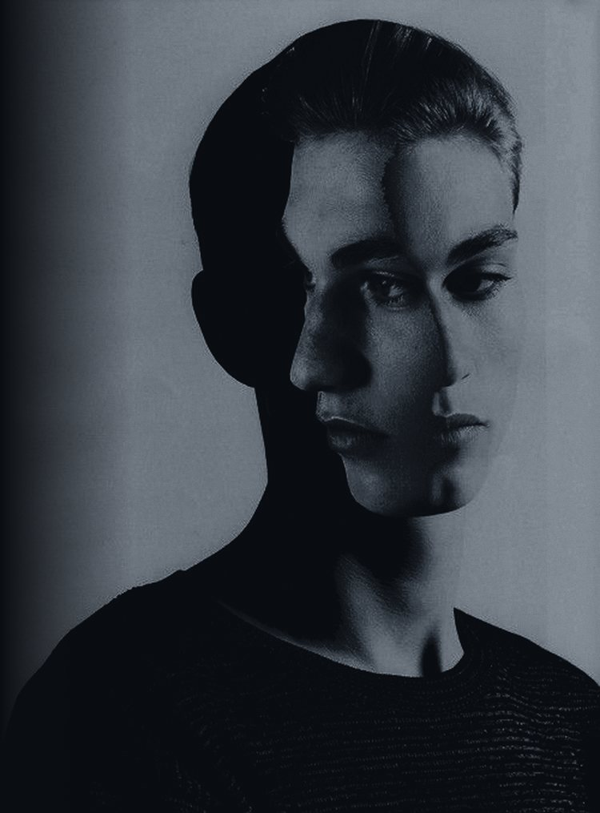

A tabletop role-playing system by Lawful
There is a version of you that you have never met.
Enter the workshop
A game about who you are, who you are becoming, and what it costs to complete that transformation.
You know the unseen version of yourself by their absence. In the choices you almost made, the words you swallowed, the questions you never explored.
Three pillars carry the weight.
The Erosion of Certainty
Facts fray as the Story unfolds. The game rewards making peace with uncertainty, never the illusion of erasing it.
The Cost of Conviction
Every meaningful action asks something of you. There are no free victories. If you cannot name the cost, the choice is not yet finished.
The Ripple of Consequences
The past is never gone. A choice keeps its weight, and that weight stays legible from the moment it was made.
Everything a character does runs through three forces.
A character is defined less by what they can do, and more by what they believe.
Vertex System Guide
A grammar of its own.
- You do not roll. You Cast.
- Gather dice equal to your stat. Every five and six is a success, and the Host sets how many you need.
- Windfall
- Two or more sixes. The moment self-actualizes, and succeeds against any odds.
- Downside
- Two or more ones. The weight breaks through, and fails against any count.
- Drift, the Crossing, Silence
- A belief erodes, reaches its reckoning, and can fall quiet for good.
- Tethers and Holds
- What another person is to you. The line you swear you will not cross.
Serious, not grim.
The weight comes from meaning, not from darkness. Death is rare, and sacred.
Enter the workshop